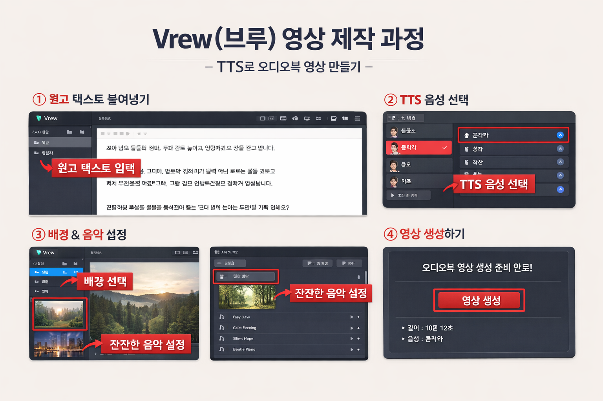

※ 시니어 콘텐츠는 “빠르게 전달”보다 “편안하게 전달”이 중요합니다.
※ 잘 말하는 목소리보다 믿음이 가는 목소리가 중요합니다.
예: “혹시 이런 경험 있으신가요?”, “많은 분들이 이렇게 느끼십니다”
| 원고 분량 | 예상 영상 길이 |
|---|---|
| 600~700자 | 약 2분 |
| 1,200자 | 약 4분 |
| 3,000자 | 약 10분 |
| 6,000자 | 약 20분 |
※ 한국어 TTS 기준 분당 약 300~350자
AI에게 아래와 같이 요청합니다.
"시니어를 대상으로 한 [주제]에 대한
10분 분량의 유튜브 원고를
차분하고 이해하기 쉽게 작성해줘"
시니어 관점, 인생 경험, 예전 기억, 익숙한 상황, 반복된 하루, 지나온 시간, 많은 분들이, 저도 그랬습니다, 아마 공감하실 겁니다, 혹시 이런 적 없으신가요
외로움, 걱정, 후회, 안도감, 위로, 그리움, 감사, 불안하지만 괜찮음
차분하게, 말 걸듯이, 조용한 이야기, 라디오 톤, 오디오북 스타일, 천천히 설명
※ 위 키워드를 프롬프트에 함께 넣으면 공감 문장의 질이 크게 좋아집니다.
※ 이 프롬프트들은 롱폼 영상의 오프닝, 중간 연결부, 마무리 모두에 활용할 수 있습니다.
이미 어느 정도 완성된 원고가 있다면, 브루(Vrew)를 사용해 매우 간단하게 오디오북 형태의 시니어 롱폼 영상을 만들 수 있습니다.
※ 아래 이미지는 실제 제작 흐름을 한눈에 이해할 수 있도록 정리된 예시입니다.

① 원고 텍스트 붙여넣기 → ② TTS 음성 선택 → ③ 배경 & 음악 설정 → ④ 영상 생성
※ 이 단계에서 교육 대상자의 자신감이 크게 올라갑니다.
※ 실제 교육 시 화면 캡쳐 이미지를 삽입하면 이해도가 크게 올라갑니다.